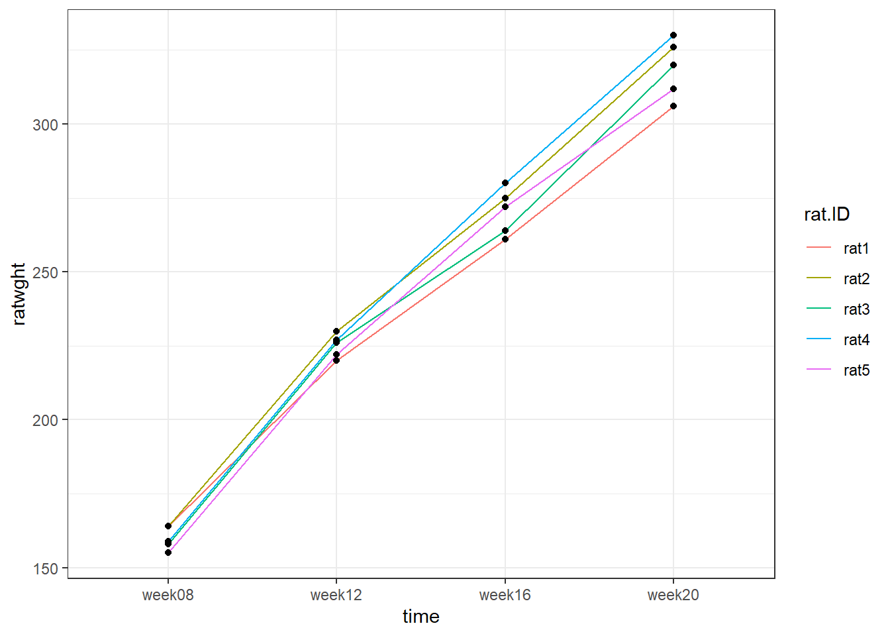
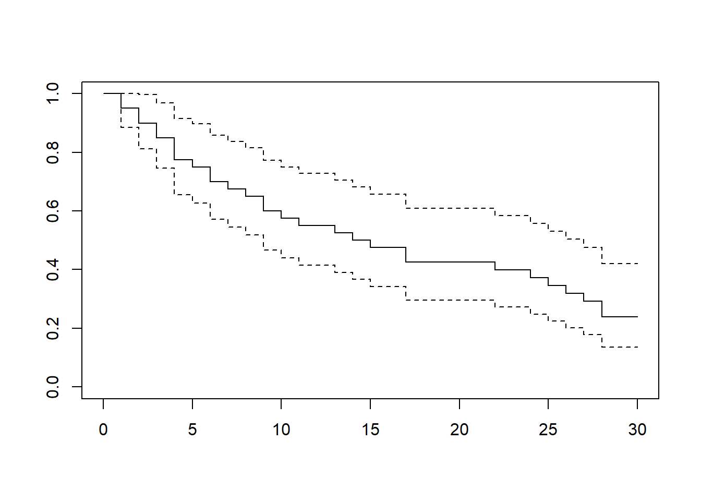
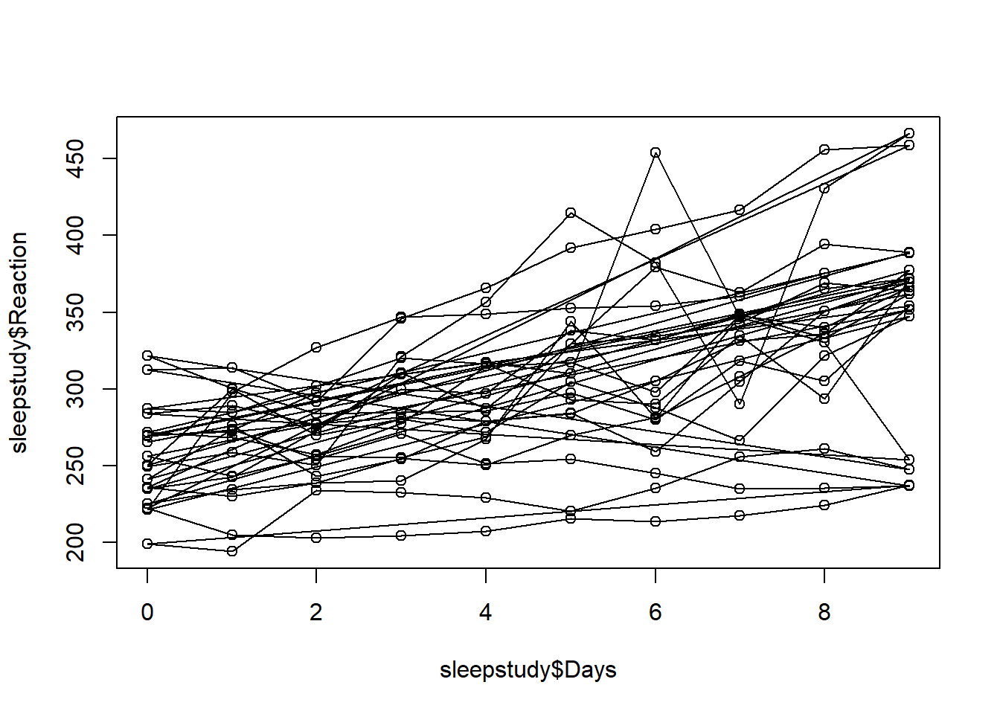
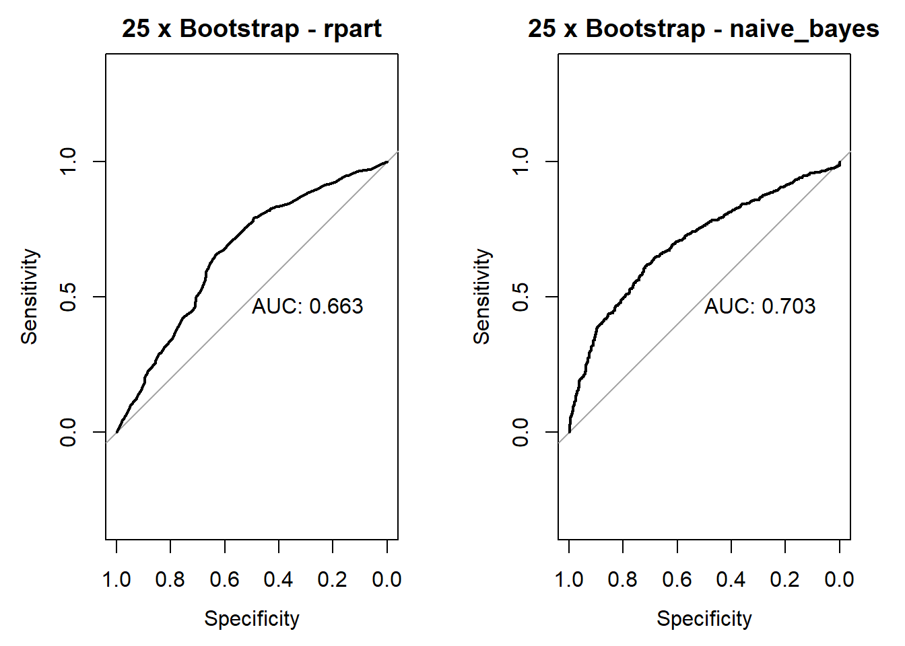
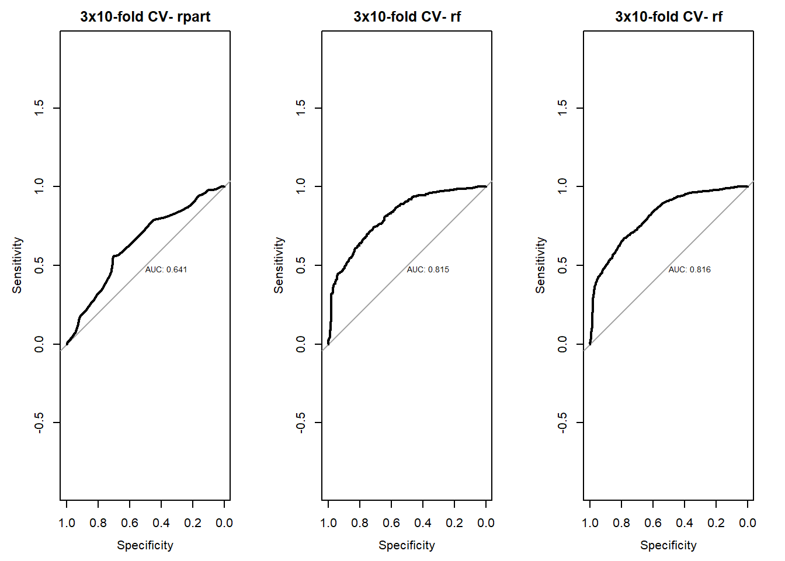
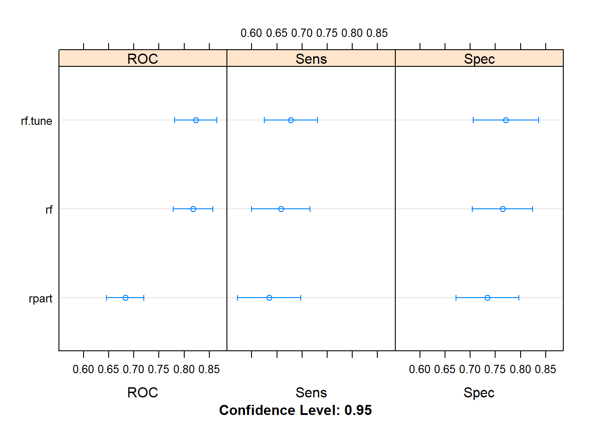

4.4 Assignment Trees
2020-02-21
Compare a decision tree with a random forest in the Cervical Cancer (Risk Factors) data set (available from UCI repository), trying to accurately classify Dx.Cancer
4.4.1 load data
library(tidyverse)
library(caret)
library(rpart)
library(rpart.plot)
library(pROC)
data <- read.csv("2.UploadedData/risk_factors_cervical_cancer.csv", na.strings = "?")
## select columns 0/1
colMax <- function(data) sapply(data, max, na.rm = TRUE)
cols<-colMax(data) %>% data.frame(max=.) %>% rownames_to_column("cols") %>%
filter(max==1) %>% .$cols
# factorize columns 0/1
data<-data %>% mutate_at(cols, ~factor(.,levels = 0:1, labels = c("no","yes")))
# excluded columns only with zeros and Dxs
data<-data %>% select(-STDs.AIDS,-STDs.cervical.condylomatosis,
-Dx.CIN, -Dx.HPV, -Dx)summarize the data
## Age Number.of.sexual.partners First.sexual.intercourse
## Min. :13.00 Min. : 1.000 Min. :10
## 1st Qu.:20.00 1st Qu.: 2.000 1st Qu.:15
## Median :25.00 Median : 2.000 Median :17
## Mean :26.82 Mean : 2.528 Mean :17
## 3rd Qu.:32.00 3rd Qu.: 3.000 3rd Qu.:18
## Max. :84.00 Max. :28.000 Max. :32
## NA's :26 NA's :7
## Num.of.pregnancies Smokes Smokes..years. Smokes..packs.year.
## Min. : 0.000 no :722 Min. : 0.00 Min. : 0.0000
## 1st Qu.: 1.000 yes :123 1st Qu.: 0.00 1st Qu.: 0.0000
## Median : 2.000 NA's: 13 Median : 0.00 Median : 0.0000
## Mean : 2.276 Mean : 1.22 Mean : 0.4531
## 3rd Qu.: 3.000 3rd Qu.: 0.00 3rd Qu.: 0.0000
## Max. :11.000 Max. :37.00 Max. :37.0000
## NA's :56 NA's :13 NA's :13
## Hormonal.Contraceptives Hormonal.Contraceptives..years. IUD
## no :269 Min. : 0.000 no :658
## yes :481 1st Qu.: 0.000 yes : 83
## NA's:108 Median : 0.500 NA's:117
## Mean : 2.256
## 3rd Qu.: 3.000
## Max. :30.000
## NA's :108
## IUD..years. STDs STDs..number. STDs.condylomatosis
## Min. : 0.0000 no :674 Min. :0.0000 no :709
## 1st Qu.: 0.0000 yes : 79 1st Qu.:0.0000 yes : 44
## Median : 0.0000 NA's:105 Median :0.0000 NA's:105
## Mean : 0.5148 Mean :0.1766
## 3rd Qu.: 0.0000 3rd Qu.:0.0000
## Max. :19.0000 Max. :4.0000
## NA's :117 NA's :105
## STDs.vaginal.condylomatosis STDs.vulvo.perineal.condylomatosis
## no :749 no :710
## yes : 4 yes : 43
## NA's:105 NA's:105
##
##
##
##
## STDs.syphilis STDs.pelvic.inflammatory.disease STDs.genital.herpes
## no :735 no :752 no :752
## yes : 18 yes : 1 yes : 1
## NA's:105 NA's:105 NA's:105
##
##
##
##
## STDs.molluscum.contagiosum STDs.HIV STDs.Hepatitis.B STDs.HPV
## no :752 no :735 no :752 no :751
## yes : 1 yes : 18 yes : 1 yes : 2
## NA's:105 NA's:105 NA's:105 NA's:105
##
##
##
##
## STDs..Number.of.diagnosis STDs..Time.since.first.diagnosis
## Min. :0.00000 Min. : 1.000
## 1st Qu.:0.00000 1st Qu.: 2.000
## Median :0.00000 Median : 4.000
## Mean :0.08741 Mean : 6.141
## 3rd Qu.:0.00000 3rd Qu.: 8.000
## Max. :3.00000 Max. :22.000
## NA's :787
## STDs..Time.since.last.diagnosis Dx.Cancer Hinselmann Schiller Citology
## Min. : 1.000 no :840 no :823 no :784 no :814
## 1st Qu.: 2.000 yes: 18 yes: 35 yes: 74 yes: 44
## Median : 3.000
## Mean : 5.817
## 3rd Qu.: 7.500
## Max. :22.000
## NA's :787
## Biopsy
## no :803
## yes: 55
##
##
##
##
## ##
## no yes
## 840 18missing data

new data
4.4.2 Classification tree
model1 <- rpart(Dx.Cancer ~ ., data = data.new,
method="class", control =rpart.control(minsplit =1,minbucket=3, cp=0)
)
par(xpd = NA) # otherwise on some devices the text is clipped
plot(model1)
text(model1, digits = 3)
## n= 858
##
## node), split, n, loss, yval, (yprob)
## * denotes terminal node
##
## 1) root 858 18 no (0.9790 0.0210)
## 2) Biopsy=no 803 12 no (0.9851 0.0149)
## 4) Smokes..packs.year.< 20 800 11 no (0.9863 0.0138)
## 8) First.sexual.intercourse< 18 646 4 no (0.9938 0.0062) *
## 9) First.sexual.intercourse>=18 154 7 no (0.9545 0.0455)
## 18) Citology=no 148 5 no (0.9662 0.0338)
## 36) Schiller=no 145 4 no (0.9724 0.0276)
## 72) Age< 44 141 3 no (0.9787 0.0213)
## 144) Number.of.sexual.partners< 2.5 97 0 no (1.0000 0.0000) *
## 145) Number.of.sexual.partners>=2.5 44 3 no (0.9318 0.0682)
## 290) First.sexual.intercourse>=20 19 0 no (1.0000 0.0000) *
## 291) First.sexual.intercourse< 20 25 3 no (0.8800 0.1200)
## 582) Age< 30 10 0 no (1.0000 0.0000) *
## 583) Age>=30 15 3 no (0.8000 0.2000)
## 1166) Age>=32 12 1 no (0.9167 0.0833) *
## 1167) Age< 32 3 1 yes (0.3333 0.6667) *
## 73) Age>=44 4 1 no (0.7500 0.2500) *
## 37) Schiller=yes 3 1 no (0.6667 0.3333) *
## 19) Citology=yes 6 2 no (0.6667 0.3333) *
## 5) Smokes..packs.year.>=20 3 1 no (0.6667 0.3333) *
## 3) Biopsy=yes 55 6 no (0.8909 0.1091)
## 6) First.sexual.intercourse< 18 33 1 no (0.9697 0.0303) *
## 7) First.sexual.intercourse>=18 22 5 no (0.7727 0.2273)
## 14) Hinselmann=no 12 1 no (0.9167 0.0833) *
## 15) Hinselmann=yes 10 4 no (0.6000 0.4000)
## 30) Age>=22 7 2 no (0.7143 0.2857)
## 60) First.sexual.intercourse< 18 4 0 no (1.0000 0.0000) *
## 61) First.sexual.intercourse>=18 3 1 yes (0.3333 0.6667) *
## 31) Age< 22 3 1 yes (0.3333 0.6667) *## accuracy on train data
predicted.classes <- model1 %>%
predict(data.new, type = "class")
# Compute model accuracy
mean(predicted.classes == data.new$Dx.Cancer)## [1] 0.9825175train model Tree with repeated 3*10-fold CV
# set definitions
metric <- "ROC"
control <- trainControl(method="repeatedcv", number=10,
summaryFunction=twoClassSummary,
classProbs=T,
savePredictions = TRUE, repeats=3)
# regression tree with repeated 3*10-fold CV
set.seed(1)
model2 <- train(
Dx.Cancer ~ .,
data = data.new,
method = "rpart",
trControl = control,
metric = metric,
na.action=na.exclude
#tuneLength = 10
)Accuracy of the model2
predicted.prob <- model2 %>%
predict(data, type = "prob")
pred.class<-ifelse(predicted.prob$yes < 0.5, "no", "yes")
mean(pred.class == data.new[complete.cases(data.new),]$Dx.Cancer)## [1] 0.97911554.4.3 Random forest with repeated 3*10-fold CV
set.seed(1)
model3 <- train(
Dx.Cancer ~ .,
data = data.new,
method = "rf",
trControl = control,
metric = metric,
na.action=na.exclude
)compare models
##
## Call:
## summary.resamples(object = results)
##
## Models: rpart, rf
## Number of resamples: 30
##
## ROC
## Min. 1st Qu. Median Mean 3rd Qu. Max. NA's
## rpart 0.5000000 0.5000000 0.5000000 0.5000000 0.5000000 0.5 0
## rf 0.3101266 0.6453125 0.8176424 0.7492932 0.9367089 1.0 0
##
## Sens
## Min. 1st Qu. Median Mean 3rd Qu. Max. NA's
## rpart 1.000 1 1 1.0000000 1 1 0
## rf 0.975 1 1 0.9974895 1 1 0
##
## Spec
## Min. 1st Qu. Median Mean 3rd Qu. Max. NA's
## rpart 0 0 0 0.00000000 0 0.0 0
## rf 0 0 0 0.01666667 0 0.5 0plot ROC
par(mfrow=c(1,2))
rocs <- lapply(fit.models, function(fit){plot.roc(fit$pred$obs,fit$pred$yes,
main=paste("3x10-fold-CV",fit$method),
debug=F, print.auc=T)})
compare accuracy of models

Inspect model Tree
## CART
##
## 858 samples
## 11 predictor
## 2 classes: 'no', 'yes'
##
## No pre-processing
## Resampling: Cross-Validated (10 fold, repeated 3 times)
## Summary of sample sizes: 733, 732, 732, 732, 732, 734, ...
## Resampling results:
##
## ROC Sens Spec
## 0.5 1 0
##
## Tuning parameter 'cp' was held constant at a value of 0inspect model Random Forest
## Random Forest
##
## 858 samples
## 11 predictor
## 2 classes: 'no', 'yes'
##
## No pre-processing
## Resampling: Cross-Validated (10 fold, repeated 3 times)
## Summary of sample sizes: 733, 732, 732, 732, 732, 734, ...
## Resampling results across tuning parameters:
##
## mtry ROC Sens Spec
## 2 0.7410562 1.0000000 0.00000000
## 6 0.7492932 0.9974895 0.01666667
## 11 0.7430512 0.9891245 0.08333333
##
## ROC was used to select the optimal model using the largest value.
## The final value used for the model was mtry = 6.ROC / complexity for models Tree
RF

4.4.4 Improve Random Forest
myGrid<-expand.grid(mtry=1:11) # number of independent variables
set.seed(1)
model3.tune <- train(Dx.Cancer ~ ., data=data.new,
method="rf", metric=metric,
trControl=control,
na.action=na.exclude,
tuneGrid = myGrid)compare models
fit.models<-list(rpart=model2,rf=model3,rf.tune=model3.tune)
results<-resamples(fit.models)
summary(results)##
## Call:
## summary.resamples(object = results)
##
## Models: rpart, rf, rf.tune
## Number of resamples: 30
##
## ROC
## Min. 1st Qu. Median Mean 3rd Qu. Max. NA's
## rpart 0.5000000 0.5000000 0.5000000 0.5000000 0.5000000 0.5 0
## rf 0.3101266 0.6453125 0.8176424 0.7492932 0.9367089 1.0 0
## rf.tune 0.3101266 0.6421875 0.7687500 0.7562777 0.9462025 1.0 0
##
## Sens
## Min. 1st Qu. Median Mean 3rd Qu. Max. NA's
## rpart 1.000 1.000000 1 1.0000000 1 1 0
## rf 0.975 1.000000 1 0.9974895 1 1 0
## rf.tune 0.975 0.990625 1 0.9962342 1 1 0
##
## Spec
## Min. 1st Qu. Median Mean 3rd Qu. Max. NA's
## rpart 0 0 0 0.00000000 0 0.0 0
## rf 0 0 0 0.01666667 0 0.5 0
## rf.tune 0 0 0 0.05000000 0 1.0 0ROC curves
par(mfrow=c(1,3))
rocs<-lapply(fit.models,
function(fit){plot.roc(fit$pred$obs,
fit$pred$yes,
main=paste("3x10-fold CV-",fit$method),debug=F,print.auc=T)})
ROC, sens and spec

http://www.sthda.com/english/articles/35-statistical-machine-learning-essentials/141-cart-model-decision-tree-essentials https://bradleyboehmke.github.io/HOML/DT.html https://www.machinelearningplus.com/machine-learning/logistic-regression-tutorial-examples-r/